Kenapa Mengunggah Karya di Wikimedia Commons?
Wikimedia Commons merupakan tempat penyimpanan (repository) yang dapat digunakan untuk menyimpan foto, diagram, animasi, musik, pidato, klip video dan berbagai jenis media lainnya. Situs ini membuka kesempatan sebesar-besarnya bagi para relawan (pengguna yang mendaftarkan diri di situs tersebut) untuk menyimpan karya-karyanya di Wikimedia Commons. Karena situs ini merupakan proyek turunan dari Wikimedia, maka situs ini juga menggunakan teknologi wiki yang memungkinkan pengguna atau orang lain untuk menyunting tiap karya yang diunggah di situs ini. Karya-karya yang disumbangkan oleh para relawan merupakan karya-karya berlisensi terbuka, yang harapannya dapat dimanfaatkan kembali oleh orang lain, salah satunya untuk tujuan pendidikan (sebagai bahan ajar). Namun, setiap pihak yang menyalin, menggunakan, atau memodifikasi karya-karya yang ada di situs tersebut harus menerapkan Atribusi yang sesuai. Artinya setiap karya yang dimanfaatkan kembali, mewajibkan pengguna untuk menyebutkan nama pembuat karya, dan menerapkan ketentuan yang sama (lisensi) terbuka pada karya turunan yang dibuat.
Sebagai tempat penyimpanan karya, Wikimedia Commons memiliki beberapa keunggulan, yakni:
(1). Semua Karya di Wikimedia Commons Menggunakan Lisensi Terbuka
Berkas-berkas digital yang diunggah di Wikimedia Commons semuanya menerapkan lisensi terbuka. Jenis-jenis lisensi yang dapat digunakan di Wikimedia Commons dapat Anda lihat di laman Copyright Tags Wikimedia Commons. Pilihan lisensi di laman ini juga dilengkapi dengan Templat-Templat berupa WikiText yang dapat Anda terapkan langsung pada karya yang Anda unggah.
(2). Temukan Karya-Karya Bersejarah Yang Sudah Masuk Domain Publik
Selain berfungsi sebagai tempat penyimpanan karya-karya baru yang menerapkan lisensi terbuka, untuk memenuhi salah satu tujuannya sebagai pusat bahan ajar, Wikimedia Commons juga digunakan untuk menyimpan karya-karya yang sudah habis masa berlaku hak ciptanya. Karya-karya tersebut dapat saja diunggah oleh pengguna perseorangan, maupun badan hukum seperti museum. Salah satu pengguna yang aktif mengunggah karya Indonesia adalah Crisco 1492, salah seorang Wikipediawan Bahasa Inggris. Pengguna ini mengunggah hasil pindaian dari koleksi majalah atau buku tua yang ia miliki. Karya-karya tersebut telah habis masa berlaku hak ciptanya, sehingga aman untuk diumumkan, dan digunakan kembali. Hasil-hasil pindaian tersebut dapat Anda lihat di tautan berikut.

{kind=link}
Sedangkan dari pihak berbentuk badan hukum, Tropen Museum merupakan museum yang aktif mengunggah karya-karya tua Indonesia di Wikimedia Commons. Sama halnya dengan karya-karya yang diunggah oleh Crisco 1492, karya yang diunggah Tropen Museum telah habis masa berlaku hak ciptanya. Namun, perbedaannya adalah Tropen Museum menerapkan hak terkaitnya sebagai pihak yang merestorasi karya-karya tersebut. Sehingga hak cipta hasil restorasi dari karya tersebut dipegang oleh Tropen Museum, dan pemberitahuan hak cipta yang diterapkan bukan tanda domain publik, melainkan lisensi Creative Commons Atribusi-BerbagiSerupa (CC BY-SA).
(3). Sistem Kerja Situs Perpustakaan Media Yang Unggulan
Sama halnya dengan Internet Archive, Wikimedia Commons juga menawarkan server yang stabil sebagai situs repository data. Di samping itu, Wikimedia Commons juga menawarkan sistem pengarsipan yang dapat membantu Anda membuat perpustakaan media digital yang rapih. Berkas-berkas yang Anda simpan dapat langsung digunakan di laman Wikipedia yang berkaitan. Sehingga Wikimedia Commons memiliki fungsi lebih sebagai perpustakaan digital yang membantu memperkaya karya ensiklopedia digital seperti Wikipedia.
(4). Membangkitkan Budaya Kolaborasi
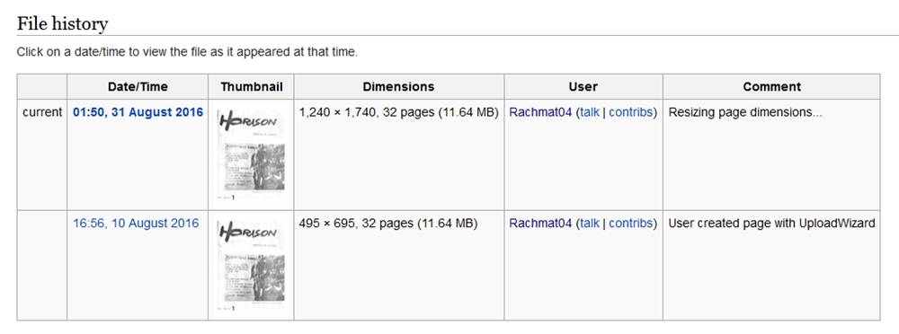
Seluruh berkas yang disimpan di Wikimedia Commons menggunakan lisensi terbuka. Artinya, berkas-berkas tersebut dapat digunakan lagi oleh pengguna lain. Misalnya, ada seorang pengguna ingin menambah tingkat kecerahan suatu gambar. Pengguna bisa langsung mengunduh gambar untuk menambahkan tingkat kecerahan gambar tersebut, dan mengunggahnya kembali dengan pemberitahuan bahwa gambar tersebut merupakan hasil modifikasi dari gambar sebelumnya. Pola tersebut secara tidak langsung telah membangun budaya kolaborasi dalam suatu ekosistem budaya bebas di dalam jaringan, dan tanpa melanggar hukum tentunya.
(5). Membantu Penyediaan Materi Pendidikan (Bahan Ajar)
Salah satu tujuan Wikimedia Commons adalah menjadi tempat penyedia materi pendidikan yang dapat digunakan secara bebas. Maka setiap karya yang dikontribusikan oleh pengguna Wikimedia Commons memiliki potensi untuk digunakan sebagai bahan ajar. Oleh karena itu, setiap pengguna Wikimedia Commons didorong untuk mengunggah karya-karya yang bermanfaat sebagai materi pendidikan. (Selengkapnya tentang materi pendidikan terbuka, silahkan klik dua tautan ini).
Bagaimana caranya menyumbangkan karya di Wikimedia Commons?
*Perhatikan bagian dengan tanda merah.
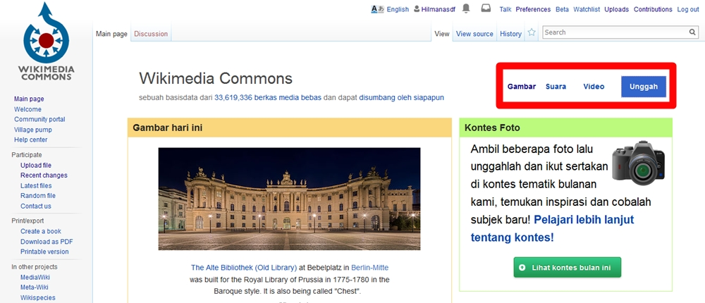
A. Kontribusi Anda dapat dimulai dengan mengakses situs common.wikimedia.org. Pada halaman depan Anda akan menemukan tombol yang akan membawa Anda pada laman pengunggahan karya di Wikimedia Commons.
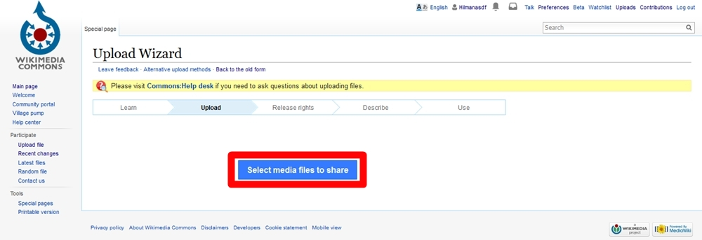
B. Pada laman ini Anda akan dihadapkan pada tombol untuk menentukan karya mana yang hendak Anda unggah.
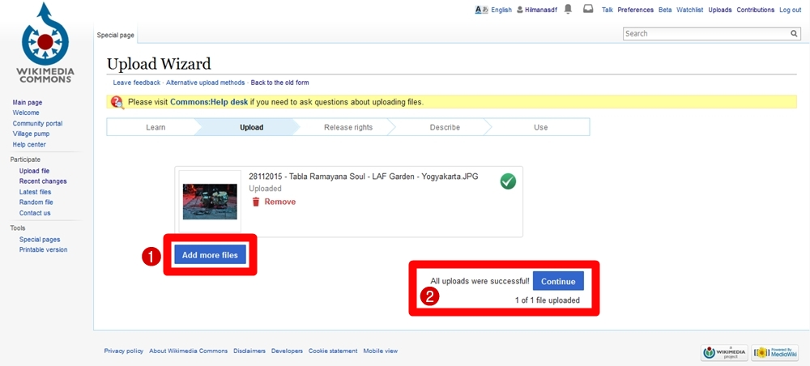
C. Laman ini akan menampilkan hasil karya yang Anda unggah.
(1). Laman ini juga menawarkan apakah Anda hendak menambahkan karya yang diunggah;
(2). Jika tidak, Anda dapat langsung menekan tombol “Continue” untuk melanjutkan proses pengunggahan.
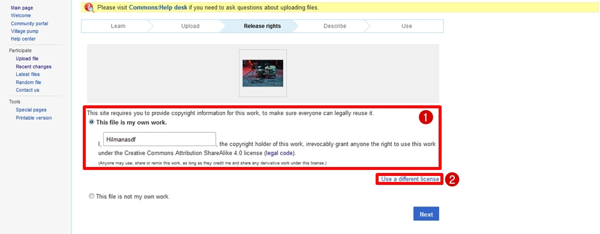
D. Pada laman ini pengunggah diwajibkan untuk mengisi pemberitahuan hak cipta yang akan diterapkan pada karyanya.
(1). Pada bagian ini, Anda menyatakan bahwa Anda telah memberikan hak kepada siapa saja untuk menggunakan karya ini dengan mengikuti ketentuan Creative Commons Atribusi BerbagiSerupa 4.0;
(2). Atau, Anda dapat memilih lisensi lain yang disediakan oleh situs Wikimedia Commons.
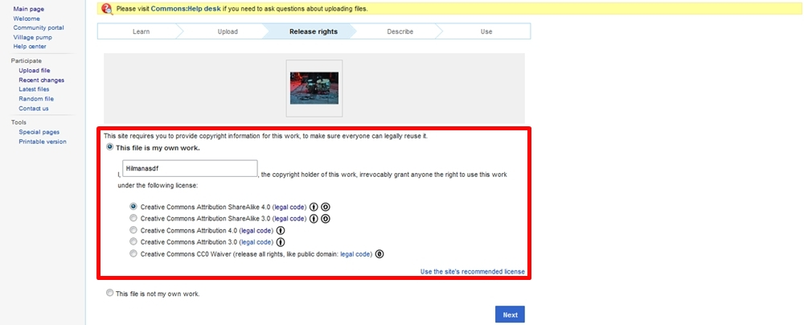
E. Wikimedia Commons hanya menyediakan pilihan lisensi CC BY 3.0-4.0, CC BY-SA 3.0-.40, dan CC0. Pilihan ini disediakan karena Wikimedia Common bertujuan agar karya-karya yang diunggah di situs tersebut dapat dimanfaatkan potensinya sebesar-besarnya, terutama untuk tujuan pendidikan. Namun, CC0 tidak atau belum dapat digunakan di Indonesia, karena belum tersedia payung hukum bagi para Pencipta yang masih hidup untuk melepaskan karya-karyanya yang baru ke domain publik.
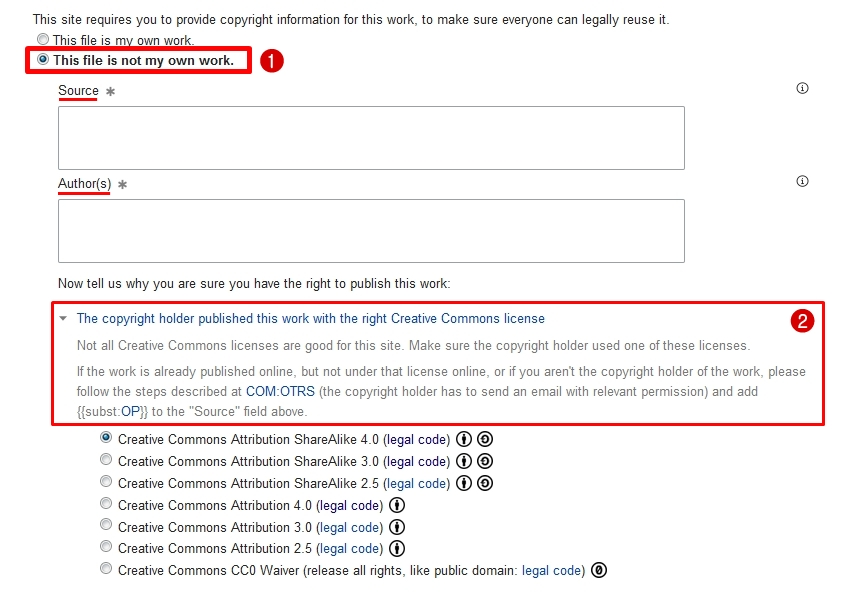
F. Apabila Anda hendak mengunggah karya orang lain, Anda dapat mengklik pilihan “This file is not my own work”. Pilihan tersebut wajib diikuti dengan pemberitahuan hak cipta dari pihak Pencipta yang mengalihkan atau memberikan izin kepada Anda untuk mengunggah ciptaannya di Wikimedia Commons. Tentu saja, karya-karya yang dapat diunggah di Wikimedia Commons hanya karya-karya dengan lisensi CC BY, CC BY-SA, dan CC0. Anda dapat melihat panduan dalam mengunggah citpaan milik orang lain dengan mengklik tautan COM.OTRS pada bagian ini. Intinya, Anda diwajibkan untuk mencantumkan suatu kontrak yang ditandatangani oleh Pencipta, yang menyatakan bahwa Anda berhak untuk mengunggah ciptaannya di Wikimedia Commons.
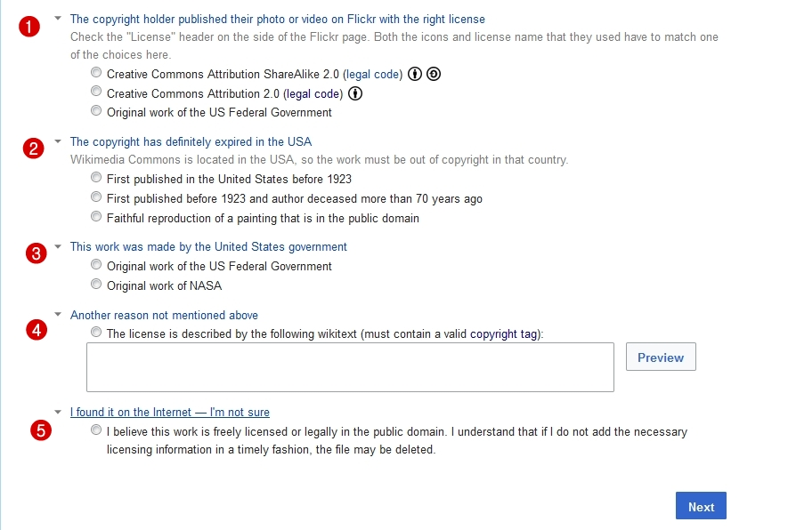
G. Wikimedia Commons juga menyediakan pilihan-pilihan lain apabila Anda mengunggah karya yang bukan milik Anda.
(1). Misalnya, seorang Pencipta telah mempublikasikan karyanya di tempat lain dengan menerapkan ketentuan lisensi CC yang sesuai dengan Wikimedia Commons, Anda dapat menggunakan pilihan nomor 2.
(2). Lalu, apabila karya yang Anda unggah merupakan karya yang sudah habis masa berlaku hak ciptanya di Amerika Serikat, maka Anda dapat memilih pilihan nomor dua. Selain banyak digunakan untuk mengunggah konten-konten terbuka, Wikimedia Commons juga banyak digunakan untuk mengunggah karya-karya yang telah habis masa berlaku hak ciptanya, seperti yang dilakukan oleh Tropen Museum.
(3). Anda dapat memilih pilihan nomor tiga apabila Anda hendak mengunggah suatu ciptaan yang hak ciptanya dipegang oleh Pemerintah Amerika Serikat. Semua ciptaan yang hak ciptanya dipegang oleh Pemerintah Amerika Serikat berstatus Domain Publik.
(4). Pilihan ini dapat Anda gunakan jika Anda bermaksud menggunakan lisensi lain yang tidak disediakan oleh Wikimedia Commons. Namun, lisensi yang akan Anda gunakan harus sesuai dengan lisensi-lisensi yang berlaku di Wikimedia Commons.
(5). Hal ini berlaku bagi karya-karya yang Anda temukan di dalam jaringan, namun Anda meragukan status hak cipta dari karya tersebut (habis tidaknya masa berlaku hak cipta suatu karya). Maka, dengan menerapkan pilihan ini Anda menyatakan bahwa Anda ragu atas status hak cipta karya tersebut, dan Anda akan menerima apabila karya tersebut dihapus oleh Wikimedia Commons jika terbukti bahwa karya tersebut belum habis masa berlaku hak ciptanya.
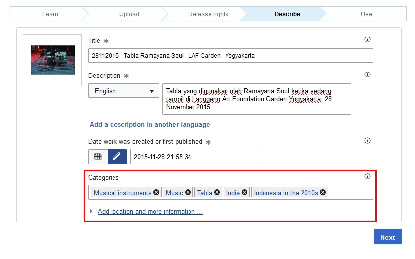
H. Laman ini akan muncul apabila Anda telah melalui proses penerapan lisensi pada karya milik Anda. Pada laman ini Anda dapat menulis judul karya yang Anda unggah, memberikan penjelasan terkait karya tersebut serta menyatakan pada tanggal berapa karya tersebut dibuat. Namun, satu hal yang harus Anda perhatikan adalah bagian kategorisasi karya. Pada bagian tersebut hendaknya Anda menuliskan kategori karya Anda dengan benar. Hal ini dapat membantu kerapihan pengarsipan karya-karya di Wikimedia Commons, dan memudahkan pengguna atau Anda sendiri ketika Anda ingin mencari karya tersebut.
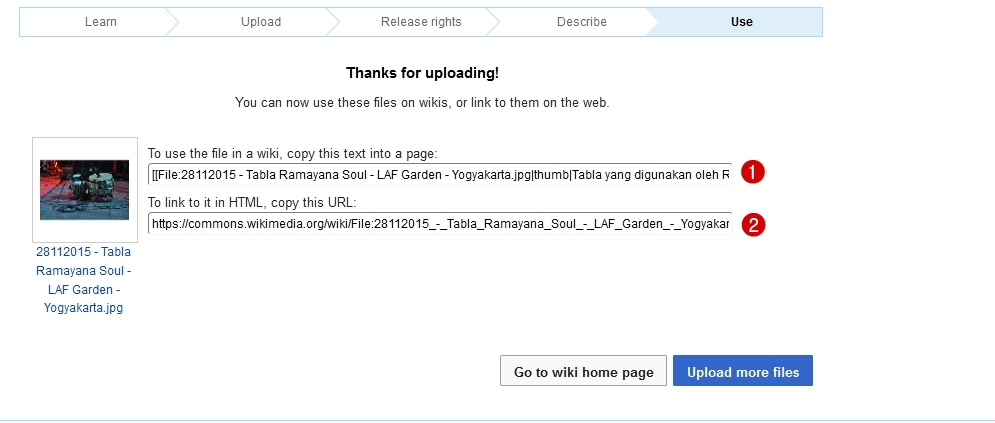
I. Selesai! Karya Anda siap untuk digunakan. Kolom nomor satu isinya adalah serangkaian kode yang dapat Anda salin, dan tempel pada laman artikel Wikipedia yang memerlukan gambar tersebut. Sedangkan kolom nomor dua merupakan kode HTML untuk mengakses berkas digital dari karya tersebut.
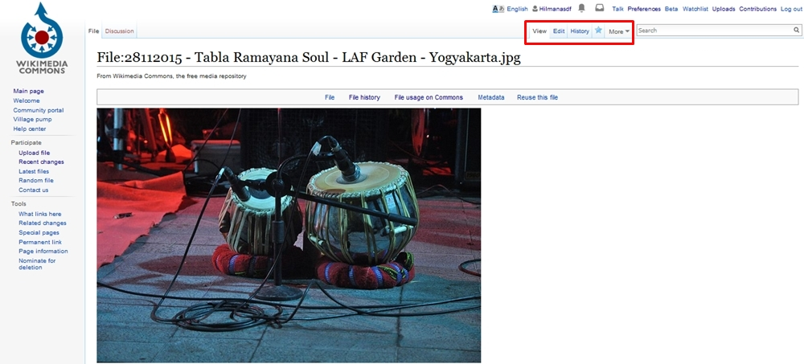
J. Laman ini merupakan tampilan karya Anda setelah sukses diunggah di Wikimedia Commons. Pada bagian ini Anda juga masih dapat menyunting keterangan-keterangan terkait karya tersebut, misalnya ada hal yang lupa Anda masukan sebagai keterangan karya. Anda dapat mengklik pilihan Edit yang terletak di pojok kanan atas laman tersebut (perhatikan kotak warna merah) untuk melakukan hal tersebut.
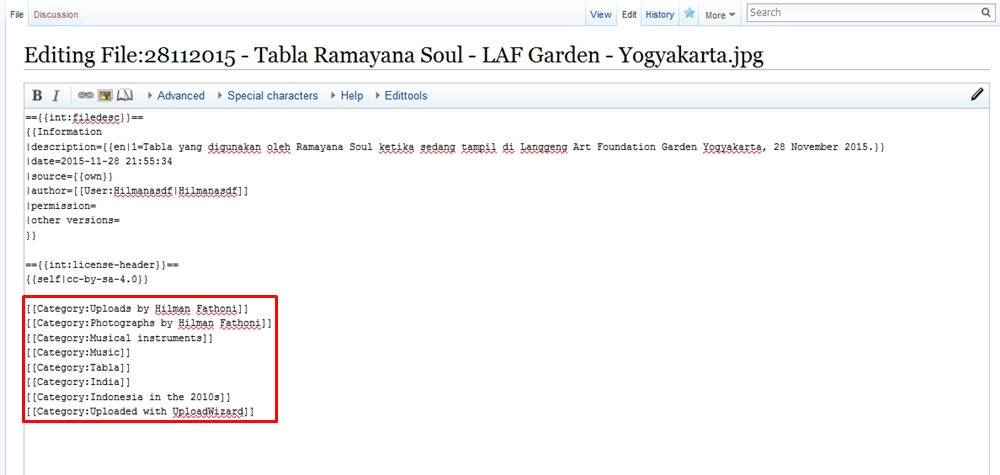
K. Setelah Anda memasuki laman penyuntingan, Anda akan dihadapkan pada bahasa kode yang digunakan oleh Wikipedia yakni WikiText. Apabila Anda perhatikan, WikiText-WikiText tersebut menunjukan bahwa Anda dapat menyunting deksripsi, lisensi, dan kategori karya yang Anda unggah. Misalnya, Anda lupa menambahkan karya tersebut ke dalam kategori foto-foto yang Anda unggah. Pada bagan “Category:”, Anda dapat menambahkan hal tersebut dengan mengikuti rumus WikiText yang sudah ada. Anda dapat menulis [[Category:
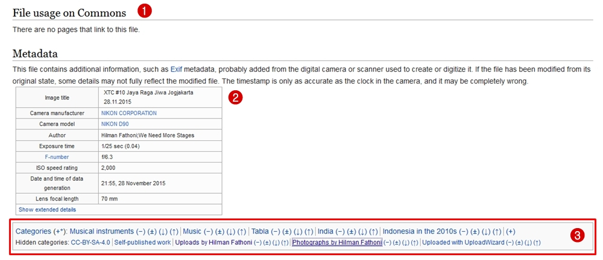
L. Anda akan dikembalikan pada laman sebelumya, yakni laman tampilan karya yang Anda unggah di Wikimedia Commons. Laman ini juga menampilkan informasi apabila karya yang Anda unggah digunakan oleh pengguna Wikimedia Commons untuk keperluan tertentu (1). Selain itu, laman ini juga menampilkan metadata (2) dari karya yang Anda unggah, seperti kamera yang digunakan, resolusi, dan tanggal data diciptakan. Dan, perubahan yang Anda buat sebelumnya (penambahan keterangan kategori karya), dapat Anda lihat pada bagian bawah (3) dari kolom metadata.
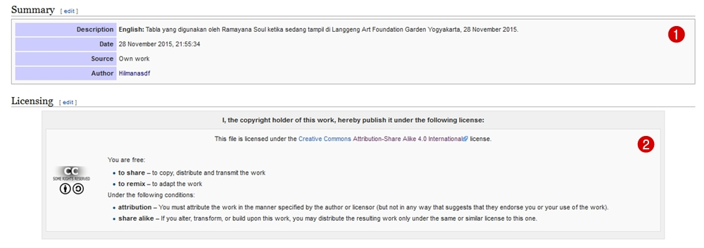
M. Selain itu, laman ini juga menampilkan deskripsi yang Anda buat terkait yang Anda unggah, dan lisensi terbuka yang Anda terapkan pada karya tersebut.
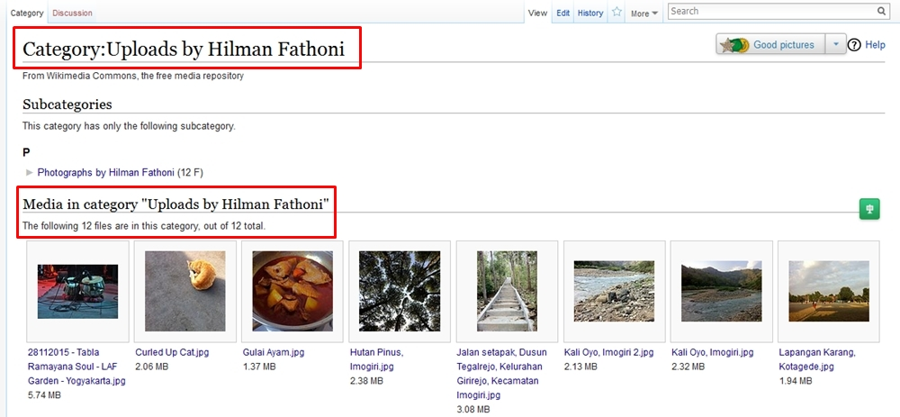
N. Apabila Anda secara konsisten memasukan karya-karya Anda pada suatu kategori, maka karya-karya tersebut akan dengan mudah dicari dengan mengetik “Category: Uploads by
Apa yang harus diperhatikan?
Ketentuan Freedom of Panorama
Ketentuan ini diberlakukan oleh negara-negara seperti Amerika, Jerman, dan Mesir. Apabila suatu negara menerapkan ketentuan tersebut pada Undang-Undang Hak Ciptanya (UUHC), maka setiap Pencipta diperkenankan untuk melukiskan kembali, maupun memotret karya-karya arsitektur baru (bukan peninggalan sejarah) tanpa khawatir dianggap melakukan pelanggaran hak cipta. Sebagaimana disebutkan dalam setiap UUHC, karya arsitektur yang berupa gedung yang sudah jadi, juga merupakan obyek perlindungan hak cipta. Indonesia tidak menerapkan ketentuan Freedom of Panorama di UUHCnya, maka setiap Pencipta yang ada di Indonesia sebaiknya memilah gedung-gedung yang hendak dipotret, serta potret-potret gedung yang mana yang akan dibagikan.
Izin Pengunggahan Karya Orang Lain
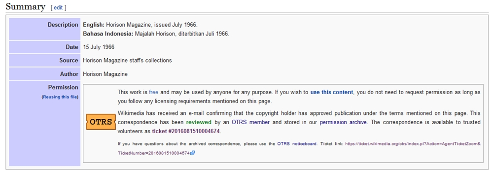
Wikimedia Commons sangat menganggap serius urusan izin pengunggahan konten. Karena, apabila konten yang diunggah tidak memiliki izin yang jelas, konten tersebut memiliki potensi untuk dihapus. Hal semacam itu dapat menghambat aktivitas berbagi konten di dalam jaringan yang merupakan salah satu tujuan Wikimedia Commons.
Maka dari itu, Wikimedia Commons menciptakan mekanisme Open-source Ticket Request System (OTRS), yakni pernyataan yang dibuat oleh Wikimedia Commons yang menyatakan bahwa konten yang diunggah telah memiliki izin yang jelas, dan sesuai dengan ketentuan Wikimedia Commons. Hal ini sangat bermanfaat bagi pihak-pihak yang bekerjasama dengan suatu museum atau badan pengarsipan dalam suatu kegiatan digitalisasi konten.
Pihak pengunggah harus menyediakan berkas perjanjian pelimpahan hak yang menyatakan bahwa pihak museum maupun badan pengarsipan telah memberikan izin pengunggahan konten ke Wikimedia Commons, dan menyatakan bahwa pihak museum maupun badan pengarsipan telah setuju untuk menerapkan lisensi terbuka pada konten-konten yang diunggah. Apabila berkas perjanjian pelimpahan hak sudah disiapkan, pihak pengunggah dapat mengunggah konten-konte tersebut, sambil menyelesaikan mekanisme OTRS dengan mengirimkan berkas tersebut ke pihak pembaca kontrak dari Wikimedia Commons. Sebagai contoh, kita dapat melihat proyek kerjasama antara Wikimedia Indonesia dengan Majalah Horison.
Tags:
Oleh: Hilman Fathoni
12 Oct 2016Kategori:
Berita Terbaru
- Lokakarya Hak Cipta dan Lisensi Creative Commons di Pekanbaru
- Pengumuman Resmi: Hasil Akhir Training of Trainers Creative Commons Indonesia
- Literatur tentang Model Bisnis Terbuka "Made With CC"
- Data dan Artikel Ilmiah Terbuka dari PLOS!
- Konten Format Model 3 Dimensi Berilsensi CC di Platform Sketchfab